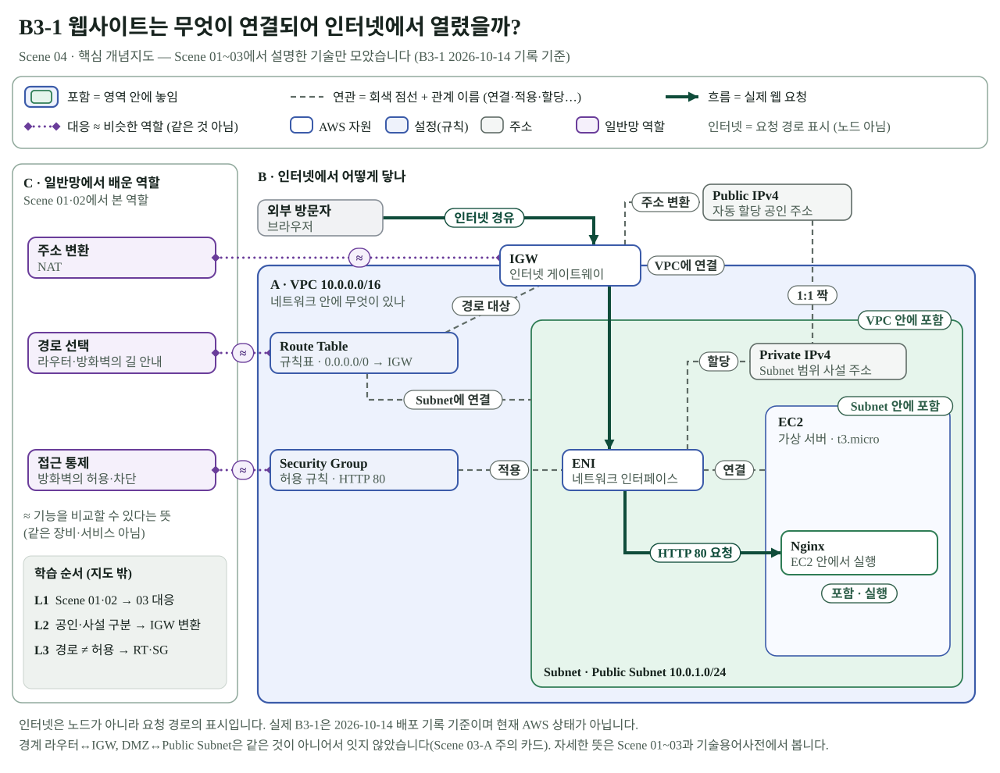
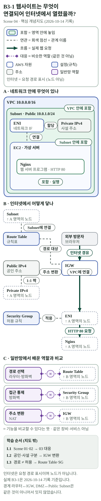

미션 스토리맵 · B3-1 Scene 04 핵심 개념지도 (Owner 검토용)
B3-1 웹사이트는 무엇이 연결되어 인터넷에서 열렸을까? — 서비스에 반영하지 않은 초안입니다. 원본 SVG를 그대로 표시합니다. 데이터: concept-map.json
노트북용
원래 크기(1280)


1000px 폭
흑백
휴대전화용 390px · 360px


스토리맵 장면 순서 (시안)
- Scene 01 · 일반 기업 네트워크 전체 구조
- Scene 02 · 웹사이트 요청·응답 흐름
- Scene 03-A · 일반 기업망과 AWS의 구조·역할 비교
- Scene 03-B · B3-1 AWS 웹사이트 접속 조건
- Scene 04 · 핵심 개념지도 (이 페이지)